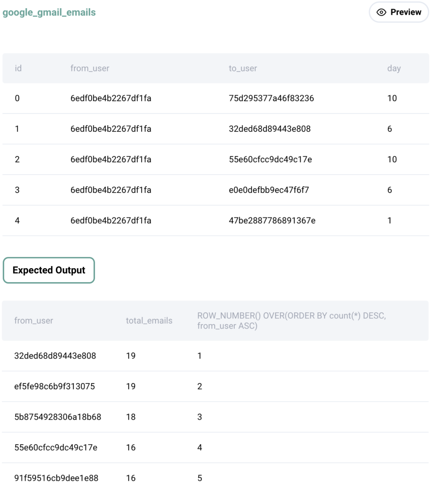

Question sourced from StrataScratch.com.
Database: MySQL
Find the email activity rank for each user. Email activity rank is defined by the total number of emails sent. The user with the highest number of emails sent will have a rank of 1, and so on. Output the user, total emails, and their activity rank. Order records by the total emails in descending order. Sort users with the same number of emails in alphabetical order.
In your rankings, return a unique value (i.e., a unique rank) even if multiple users have the same number of emails. For tie breaker use alphabetical order of the user usernames.

/*
My strategy: Since the question asks for a table of users ranked by
the most emails sent, with a unique rank number even in case of ties
(where alphabetical user name determines the rank number), the
ROW_NUMBER() window function should be used over the result set of
total count of emails per user.
*/
SELECT from_user, COUNT(id) AS total_emails,
ROW_NUMBER() OVER(ORDER BY COUNT(id) DESC, from_user) AS activity_rank
FROM google_gmail_emails
GROUP BY from_user;